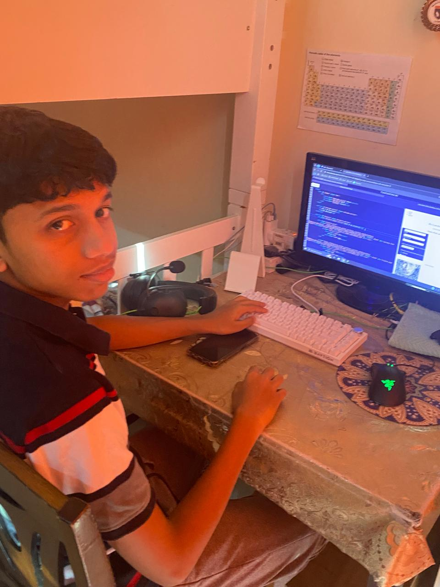
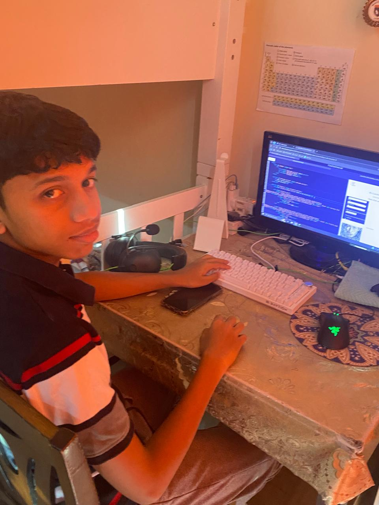

Muhammad Mahdi
Gold Category
Sheik Sultan Award


I dedicated 300 hours over three months to completing a coding course, where I gained hands-on experience in programming. Through this journey, I learned to write clean and efficient code, debug errors, and develop problem-solving skills. This experience not only enhanced my fitness but also taught me the value of consistency and perseverance in achieving long-term goals.
The course challenged me to think logically and improve my ability to build structured programs. This experience not only strengthened my technical skills but also enhanced my perseverance and attention to detail which made me build this website.
 

Over two months, I walked for more than 64 hours, covering a total of 260 km. This journey tested my endurance, discipline, and commitment to staying active. Pushing through long distances, I built resilience and improved both my physical and mental strength.


By evening, we set up camp again, working together to cook a meal using limited supplies. The satisfaction of making food in the desert after a long walk made it taste even better.


As the sun began to set, we climbed a nearby dune to watch the breathtaking view of the desert turning golden. The evening was spent sharing stories around the fire, strengthening our bond as a group.


The adventure had been tough but incredibly fulfilling, leaving us with skills, memories, and a deep appreciation for the beauty and challenge of the desert.